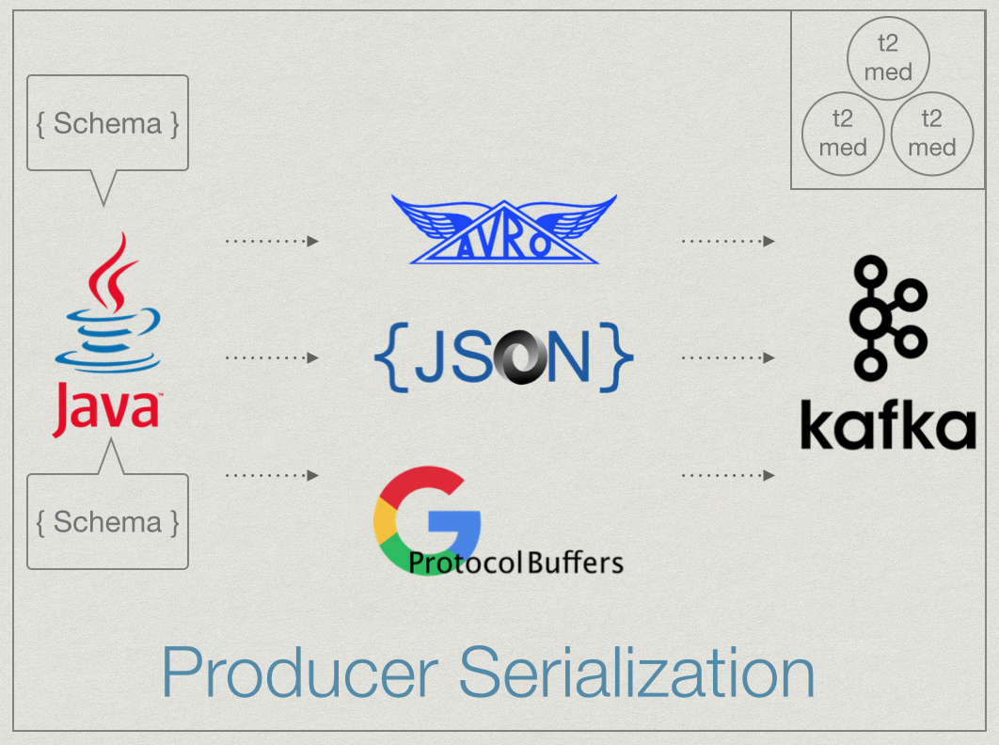
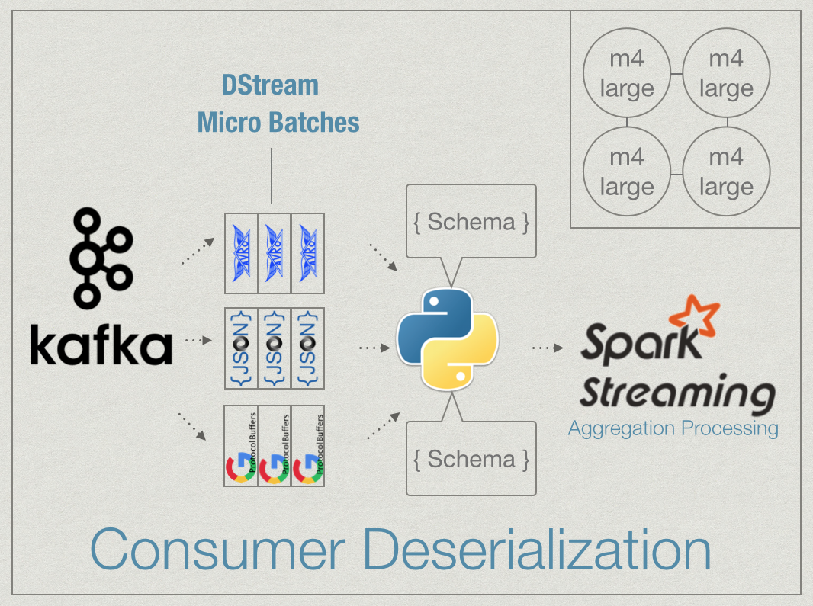

Serialization metrics in an Internet of Things environment.
The "Internet of Things" (IoT) is on its way and it's going to bring a lot of data with it. By simulating a large facility with millions of sensors we can evaluate the effect of different serialization protocols on the throughput of a micro-batch streaming system.
Serialization is important for passing data through a heterogenous environment in a language agnostic format. A serialization format can also give flexibility towards scheme changes as data needs evolve. Since there is so much data: reducing the size of that data will improve network performance, disk and memory accesses.
This JSON message in text form is about 265 bytes.
{
"minType":"BATHROOM",
"majType":"HUMANITARIAN", "major_area_num":19, "minor_area_num":436,
"quantity":3.7826,
"unique_id":1000,
"runtime":1443200834318,
"item_sensed":"toilet", "subject_measured":"water",
"sensor_location_name":"bathroom",
"ticks_since_turn_on":0
}
Avro schema are specified using a JSON format. Below is the schema used for encoding the JSON data shown above. Serializing it into a byte array with Avro makes it about 58 bytes and serializing with Protocol Buffers makes it 69 bytes.
{"namespace": "com.SerIoTics.data_generation",
"type": "record",
"name": "WaterSensor",
"fields": [
{"name": "quantity", "type": "float"},
{"name": "major_area_num", "type": "int"},
{"name": "minor_area_num", "type": "int"},
{"name": "time_since_turn_on", "type": "int"},
{"name": "unique_id", "type": "long"},
{"name": "runtime", "type": "long"},
{"name": "minType", "type": "string"},
{"name": "majType", "type": "string"},
{"name": "item_sensed", "type": "string"},
{"name": "subject_measured", "type": "string"},
{"name": "sensor_location_name", "type": "string"}
]
}
Bundling the schema header along with the avro serialized byte-array results in a 540 byte message which actually increases the message size in this case.
To perform an experiment Java objects created and serialized into JSON strings, or byte arrays in the case of Protobuf or Avro. The serialized messages are then fed into a Kafka cluster. Spark Streaming consumes messages in parallel from a Kafka topic using PySpark and the messages are de-serialized into Python objects. The schema definitions are located on both the producer and consumer sides per the needs of each protocol. PySpark is used to perform an aggregation process with map-reduce on the unique-id of the device which sent the message.
 The results for Protocol Buffers and Avro are very similar. Defining the schema provides an advantage over parsing JSON, enabling much faster marshalling and unmarshalling of the messages. A slight advantage over Protocol Buffers is given to Avro, but the real differences come down to how the protocols fit into the specific use case of a processing pipeline.